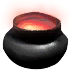
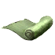

Бирюзовый ингибитор
Предметы / Ресурсы
Открыть в интерактивной вики →
| Вес | 1 |
|---|---|
| Цена | 3 платины |
Описание
Материя, позволяющая контролировать мощность во время улучшения снаряжения I ранга.
| Средство для контроля силы при улучшении снаряжения ранга I. |
Рецепт
Создание: 20x  Ограненный лиметит + 20x
Ограненный лиметит + 20x
Ограненный лиметит + 20x 
Травяной отвар + 15x
Паучье волокно + 15kГде создать

Стоимость
3  Платина
Платина
ПлатинаСпособы получения
|
Изготовление
Изготавливает Тиземлин в Рыбацкой Деревне за 15 000 золота после доставки ингредиентов:
|